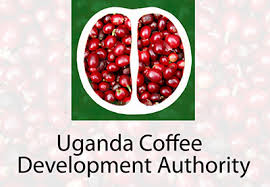

Our mother garden consists of a variety of coffee seedlings. We have all 7 lines of coffee wilt disease resistant varieties and the traditional clones A-F.
Our mother garden consists of a variety of coffee seedlings. We have all 7 lines of coffee wilt disease resistant varieties and the traditional clones A-F.
Our mother garden consists of a variety of coffee seedlings. We have all 7 lines of coffee wilt disease resistant varieties and the traditional clones A-F.
Our process guarantees a cleaner and more consistent flavor than other methods.
Only the ripest green cherries are picked for processing. This guarantees a higher acidity and gives a better taste.
It guarantees a great deal of quality control through selective picking and allows for a much more consistent flavor.
These statistics show our current production and growth potential.